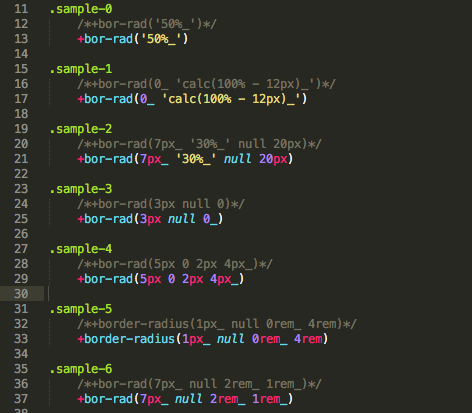

If you use Sass in your development workflow, you know the importance of mixins. When you see some things that are written repeatedly and tediously in CSS, that’s where mixins can help you prevent repetitive work. A mixin contains CSS declarations that you can reuse throughout your site.
There are many mixins are made by developers, to help you when working with Sass in your development. Most cover things that often repetitive in CSS. From adapting across multiple browsers to creating buttons, animations and transition effects, find this and more in the following K-SASS-CORE mixin libraries you should get for your Sass development.
https://github.com/baonguyenyam/k-sass-core
https://github.com/baonguyenyam/k-sass-core/wiki/Welcome-to-K-SASS-CORE

.sample-0
+padding(2rem_ '0 !important' 3rem_ 0)
.sample-0 {
margin-top: 2rem !important;
margin-right: 0 !important;
margin-bottom: 3rem !important;
margin-left: 0;
}
.sample-1
+border-radius('50%_')
.sample-1 {
border-radius: 50% !important;
}
.sample-2
+border(bottom, das red, 'calc(100% - 3rem)_')
.sample-2 {
border-bottom: dashed red calc(100% - 3rem) !important;
}
And more...